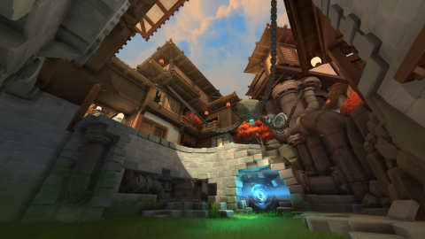
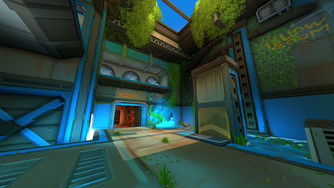
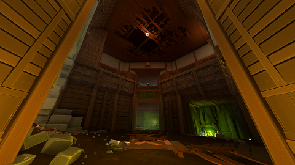
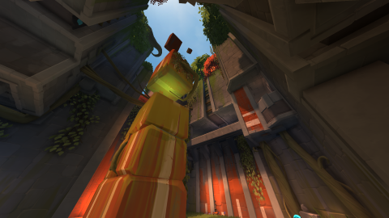
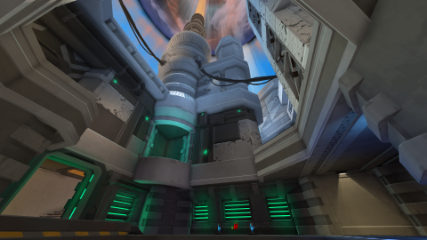
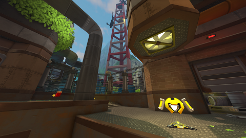
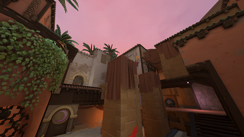

Diabotical Duel Spawns
Diabotical spawn system for the ranked duel maps made with HTML5 and JS Modification of Mementos Quake Live visualization System. (http://www.esreality.com/?a=post&id=2219012) The map images are made by taking screenshots of the 'Mini Map' And then changing the background in Photoshop This project is still in progress and I will be adding any new competitve maps changes to the spawns
Spawn Logic
Furthest 3 spawns. Initial spawns are 100% random as long as it follows the spawn logic.
      